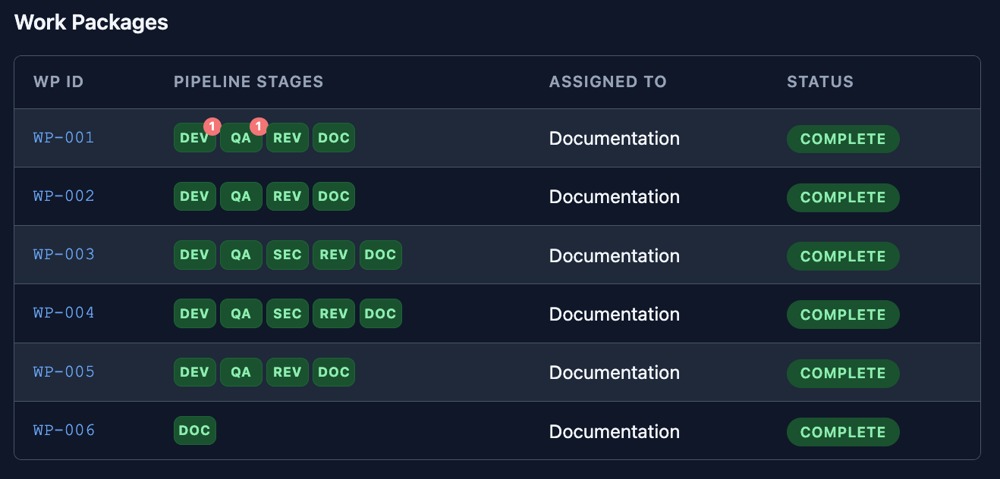
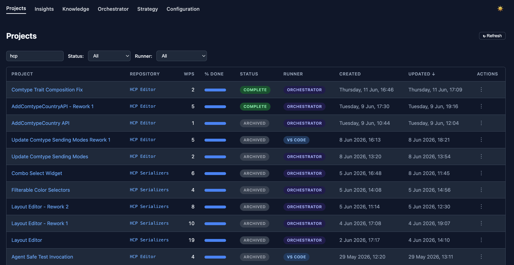

AI Insights
Structured Multi-Agent Workflows
Sebastian Mordziol
Welcome everyone. Today I'll share how we brought engineering discipline to AI agent instructions —
and what happens when you give AI agents structure, persistent memory, and defined roles.
What We'll Cover
Part 1 — Persona PhilosophyWhat agent personas are, why they matter, and how to write them well.
Part 2 — The Build SystemWrite once, deploy to every AI platform.
Part 3 — The Ledger & WorkflowHow 9 agents coordinate through a shared notebook.
Demo — The Ledger GUISee a completed project from the inside.
This is about making AI work reliably — not a tool demo.
Three parts plus a short live demo at the end. The focus is on the "why" and the philosophy behind
persona curation — the technical parts are kept visual and accessible.
Part 1
Persona Philosophy
The foundation of everything.
What is an Agent Persona?
A structured instruction document that tells an AIwho it is, what it does, and how it works.
Not just a prompt — an operating manual.
Our running example: the Recipe Curator "Imagine an AI that's genuinely good at helping you cook your way—
We'll use the Recipe Curator throughout — it's a real production persona from our standalone suite.
Non-technical, universally relatable. Everyone understands cooking.
The Persona Difference
Same prompt: "Please give me a pasta carbonara recipe." — Gemini Web
Without persona
Authentic Roman Pasta Carbonara
With Recipe Curator (Gem)
Smoked Mackerel & Garden Savory Carbonara Italo-Provençal Fusion garden herbs by name.household equipment .
Both results from Gemini Web, same prompt. The bare AI gives the most obvious answer from page 1 of
a search engine. The persona-driven AI creates something novel — respects the no-fish policy (uses
canned mackerel, not fresh), names the Fissler pan, pulls savory from the garden. The persona IS
the difference.
The Craft of Persona Curation
Natural Language Programming
Writing personas is programming — without code.
The Recipe Curator agent's Workflow section:
Check In — ask what they've cooked recently
Understand the Request — quick lookup or weekly plan?
Survey Options — generate 3+ candidates across traditions
Adapt & Compose — tailor to household
Format Output — use the standard template
Verify Targets — check nutrition & color coverage
Handoff — end with status marker
Same logical structure as a processing pipeline. You define inputs, outputs, control flow, and error handling.
This is the key insight for the technical audience: persona curation IS programming. For the non-technical
audience: it's a recipe for how the AI should think. You debug personas the same way you debug code —
observe the output, trace the logic, adjust the instructions.
Persona Document Structure
Mission first, workflow last. The AI reads top-to-bottom — frontload what matters.
1 Mission — Identity anchor + core purpose
2 Operating Philosophy — Values & principles (rainbow plate, seasonal…)
3 Inputs — What the user can provide
4 Outputs — Templates with exact format (recipe, meal plan)
5 Reference Data — Kitchen equipment, Rainbow Eating table
6 Strict Constraints — Nutrition targets, no tuna, metric only
7 Workflow — Step-by-step processing pipeline (anchored last)
276 lines — not a one-liner.
The structure matters. Mission comes first because it's the most important context for the AI. The
workflow comes last because it anchors the behavior — the AI has already absorbed the context and
constraints by the time it reaches the step-by-step instructions.
LLMs speak Markdown
The entire Recipe Curator persona is a single Markdown file. No tooling required.
Human-readable — authors and reviewers need no special tools
AI-native — models parse Markdown natively
Semantically structured — headings create structure
Formatting as a tool — bold text for emphasis
Version-controllable — Git diffs show exactly what changed
Platform-portable — every AI tool accepts plain text
📄 Click to view the full persona source →
This is the actual Recipe Curator persona — 276 lines of Markdown. No JSON, no YAML config, no
proprietary format. The headings create semantic structure that the AI interprets naturally.
Markdown is the lingua franca of AI instructions. Click the document icon in the top right at
any time to see the full source.
The Identity Anchor
Unreliable
"You are a chef."
Stronger
"Identity: Private Chef & Culinary Consultant.
Mirrors how system prompts work internally.
💡 TIP: Using "Please" in instructions subtly shifts the model into a positive, cooperative bias.
The AI doesn't need to BE something — it needs to DO something. The identity anchor defines the
function, not the character. This is more stable over long conversations. And a small practical tip:
using "please" in your instructions genuinely affects the model's tone and cooperativeness.
Why English Works Best
Language models store concepts , not words.
But they're trained predominantly on English text .
Prompts in English → more predictable results
From the Recipe Curator:"Match the User's Language — respond in the language the user writes in."
Practical tip for this multilingual audience. Write your persona in English, let the AI handle
the output language. The model can juggle languages perfectly well — but the instruction layer
is most reliable in English because that's where the training data is densest.
What Makes a Persona Powerful
Domain Knowledge
Context the AI can't guess — so you give it.
Equipment Capabilities
Cast-iron wok (large) High-heat stir-fry, deep-frying, smoking Römertopf (clay roaster) Slow-roasting with steam, no-fat cooking Krampouz crêpe machine (44 cm) Thin crêpes, galettes de sarrasin WMF Pressure cooker Fast stocks, braises, legumes, steaming Fissler deep sauté pan One-pot dishes, braises, sauces with volume Gas plancha Outdoor flat-top grilling, high-heat searing Small flour mill Fresh-milled flour from whole grains
A persona isn't just rules — it's knowledge .
This is the table from the actual persona. The AI now knows what's in the kitchen — so it
suggests recipes that USE this equipment. The Smoked Mackerel Carbonara referenced the Fissler
pan and the gas stove by name. If you don't have a piece of equipment, the persona tells the AI
to adapt the technique instead.
What Makes a Persona Powerful
Values & Standards
A quality standard the AI enforces automatically.
Color Group Key Phytonutrients Examples
Lycopene, ellagic acid Tomatoes, red peppers, strawberries Beta-carotene, hesperidin Carrots, sweet potatoes, mango Lutein, sulforaphane Spinach, broccoli, zucchini Anthocyanins, resveratrol Eggplant, blueberries, figs Betalains Beets, rhubarb, ruby chard Allicin, quercetin Garlic, mushrooms, cauliflower
Equipment = situational awareness |
Rainbow Eating = quality standardsjudgment calls , not just follows commands.
Per-meal target: 2-3 color groups. Per-week: all 6 must appear. The AI checks this automatically
on every recipe and flags gaps. This is the key takeaway: equipment gives situational awareness,
rainbow eating gives quality standards. Together, they let the AI make judgment calls. This is the
difference between a prompt and a persona.
Part 2
The Build System
Write once, deploy everywhere.
Where Can Personas Be Used?
The key point: personas aren't tied to one tool. You can use them almost anywhere. But each platform
has its own format for how the instructions are loaded — which is exactly the problem the build
system solves.
The Scaling Problem
One persona. Many targets.
Each with its own metadata format.
VS Code needs YAML frontmatter.
The persona builder: a templating system
Maintaining copies by hand doesn't scale. One change to the persona means updating 3 files in 3
different formats. The persona builder solves this with a template engine.
Build Pipeline
Sources YAML metadata
→
Build Engine Resolve variables
→
Targets VS Code .agent.md.md.md
Shared partials handle cross-cutting concerns:
Single source of truth. One change propagates to all targets. Shared partials mean that if you
change how all agents should log incidents, you change one file and rebuild. No code on screen
intentionally — this is the conceptual flow.
Part 3
The Ledger & Workflow
A team of 9 interconnected AI specialists.
The Agentic Workflow
Granular Precision with well-defined personas.
›
2
PM
Decompose & schedule
Decomposer
Sequencer
Configurator
Bootstrapper
›
›
›
›
›
›
›
9
Synthesis
Wrap up & learn
Knowledge Archiver
The full development lifecycle in one chain — and beyond:
Nine specialized agents, each with a defined role. The PM and Synthesis have subagents for
decomposition and knowledge extraction. Each agent has its own persona built by the same build
system we just discussed. The yellow-bordered cards have subagents shown below.
The Coordination Problem
Nine agents need to share state .
AI has no long-term memory between sessions.
Memory concepts are tool-specific (e.g. Claude).
What if we gave them a shared notebook ?
This is the core problem the ledger solves. Each agent runs in its own session — when it ends,
the context is gone. The ledger is the persistent state that bridges the gap.
The Project Ledger
A persistent notebook that workflow agents read from and write to.
📋 Shared Memory
The state that makes coordination possible. Lives on disk, survives across sessions.
🔀 Handoff Authority
Each agent asks "what should I do next?" — the ledger routes them based on project state, not human intervention.
👁️ Observation Log
Every agent can add observations. The ledger accumulates collective intelligence.
The notebook is tooling-independent. VS Code, Claude Code, headless orchestrator — switch tools, keep the ledger.
Three roles in one. The observation log is particularly powerful — problems surface organically
as each specialist examines the work through their lens. No single agent needs to see everything;
the ledger accumulates collective intelligence. And it's just JSON files on disk — completely
tool-agnostic.
Knowledge That Persists
Elevate curated project insights into institutional memory.
🌍 Global Knowledge
Cross-repository insights: architectural patterns, tooling decisions, workflow lessons.Survives across all projects.
📦 Repository Knowledge
Codebase-specific facts: conventions, gotchas, module dependencies.Scoped to one repo, always available.
Synthesis extracts insights → future Planners & PMs query the store before decisions.project strategy — high-level vision that aligns agent work.
The Knowledge Archiver (subagent of Synthesis) extracts insights at project end. Future projects
start smarter. Two scopes: global knowledge applies everywhere, repository knowledge is codebase-specific.
The project strategy is a separate concept — a high-level vision and timeline context.
Dynamic Pipelines
Not every task needs all 9 stages. The PM agent decides on the stage sequencing.

WP-006: docs only. WP-001: rework badges — the pipeline caught issues and looped back.
This is a screenshot from the actual ledger GUI. Notice WP-006 has only DOC. WP-003 and 004 include
the security audit stage. WP-001 has red rework badges on DEV and QA — meaning those stages found
issues, sent the work back, and the developer fixed them. The pipeline is adaptive.
Live Demo
The Ledger GUI
Let's look at some of the integrated GUI's features.

Project overview · Work packages · Pipeline stages · Agent observations · Synthesis report · Knowledge & Strategy
Switch to the browser and walk through the GUI. Show the project overview, click into a work
package, show the pipeline stages with their status badges, scroll through observations left by
different agents, and show the synthesis report. Keep it conversational. This makes everything
from Parts 1-3 concrete.
Key Takeaways
1. Personas bring engineering rigor to AI instructions.Not prompts — operating manuals. Versioned, templated, validated.
2. Agent personas are useful for everyone .Engineer your own personas - for both business and private use.
3. A shared ledger turns isolated sessions into a coordinated team .Persistent memory + automatic handoffs + collective intelligence.
4. This approach works today , with tools you already have.VS Code, Claude Code, Gemini, ChatGPT — personas work across all of them.
Three things to remember. Personas are engineering artifacts. The ledger creates a team.
And you can start using this approach today.
Thank You
Questions?
AI Insights — github.com/Mistralys/ai-insights
Persona Builder — github.com/Mistralys/persona-builder
Open for questions. Point to the GitHub repos for anyone who wants to dig deeper or try it out.